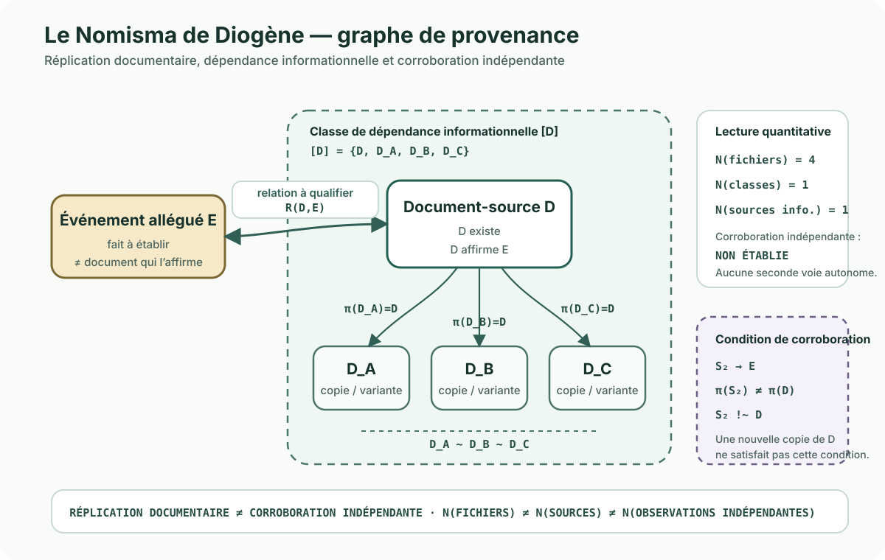

Trace
Une URL, une étiquette, un document, un titre ou une déclaration existe.
Idée conceptuelle · Concordance
« Le Nomisma de Diogène » est une expérience de pensée Muze-X. Elle reprend comme métaphore une tradition antique associée à Diogène de Sinope : l’injonction παραχαράττειν τὸ νόμισμα (paracharattein to nomisma), souvent comprise comme « altérer / refrapper la monnaie ». L’anecdote transmise par les sources anciennes reste historiquement incertaine ; Muze-X n’en fait donc pas un fait biographique établi.
Une parole peut attribuer une origine, une étiquette donner un nom, un document attester une action et un système accepter une information. Chacune de ces traces peut être authentique, utile et correctement enregistrée. Mais le nom donné ne suffit pas à établir la nature de l’objet, le document ne suffit pas à établir l’exécution de l’événement qu’il décrit, et l’acceptation par un système ne transforme pas une convention en réalité établie.
Le Nomisma ne demande donc pas d’abord « vrai ou faux ? », mais : quoi est relié à quoi, par qui, quand, par quelle trace, avec quelle provenance et avec quel niveau de certitude ? Il distingue ce qui est observé, déclaré ou documenté de l’objet, de l’état ou de l’événement auquel cette information est rattachée, puis qualifie explicitement la relation entre eux.
Une URL, une étiquette, un document, un titre ou une déclaration existe.
On vérifie ce que cette trace permet réellement de rattacher à une source, un auteur, un contenu ou un événement.
La relation peut être établie, divergente, indéterminée ou simplement non recherchée.
Repères historiques
Les traditions antiques concernant Diogène de Sinope, l’altération de la monnaie et l’oracle de Delphes existent sous plusieurs versions. Muze-X utilise cette matière comme métaphore philosophique et non comme biographie certaine.
Complément logique · Provenance
Supposons qu’un document D affirme qu’un événement E a eu lieu. Le premier constat peut être borné à « D existe » et « D affirme E ». L’occurrence matérielle de E reste une relation distincte à qualifier. Si ce même document est ensuite transmis à plusieurs organismes et enregistré sous plusieurs noms — D_A, D_B et D_C — nous obtenons plusieurs artefacts documentaires, mais pas nécessairement plusieurs observations indépendantes de l’événement.

[D] = {D, D_A, D_B, D_C}. Plusieurs artefacts peuvent donc exister sans constituer plusieurs sources indépendantes.D, D_A, D_B et D_C peuvent être quatre fichiers effectivement présents dans quatre emplacements ou systèmes différents.
Si D_A, D_B et D_C dérivent tous de D, ils appartiennent à une même chaîne de provenance informationnelle. Changer le nom du fichier ne crée pas une nouvelle source.
Une corroboration plus forte exige une seconde voie réellement indépendante : une autre source, observation ou trace qui ne dérive pas de D.
Cette distinction ne permet pas de conclure qu’un événement n’a pas eu lieu. Elle empêche seulement de transformer automatiquement la multiplication des copies d’une même information en augmentation du niveau de preuve.
Applications publiques
Le Nomisma n’est pas limité aux ressources pédagogiques. Sa fonction est transversale : distinguer ce qui circule dans un système de ce qui est réellement établi, puis conserver la provenance, la temporalité et l’indépendance des sources.
Une URL, un titre, un auteur déclaré ou une proposition GitHub sont des traces à qualifier avant publication.
Exemple : plateforme d’hébergement ≠ créateur ; proposition ≠ ressource publiée.
Le logement peut être suivi comme un objet persistant dont les composants, états et événements évoluent dans le temps. Un DPE, un état des lieux, une attestation d’intervention ou une facture deviennent des représentations ou traces datées : ils ne se substituent pas automatiquement à la réalité matérielle qu’ils décrivent.
Exemple : un document peut affirmer qu’une intervention a eu lieu ; l’existence de cette affirmation et l’occurrence matérielle de l’intervention restent deux relations distinctes.
Application aux ressources proposées
Une Issue est une proposition. Elle n’est pas encore une ressource éditorialement publiée. Avant intégration, nous vérifions les métadonnées utiles et leur portée.
L’URL doit être une source publique en HTTPS. L’existence d’un lien ne vaut ni approbation du contenu ni validation scientifique.
La plateforme d’hébergement n’est pas automatiquement le créateur. Par exemple, « YouTube » décrit généralement l’hébergeur, pas nécessairement la chaîne ou l’auteur de la vidéo.
Nous publions un lien et des métadonnées. Lier vers une ressource ne donne pas le droit d’en recopier le média, le texte ou les images.
Une proposition insuffisamment attribuée peut rester à compléter. Cela ne signifie pas qu’elle est fausse ou rejetée.